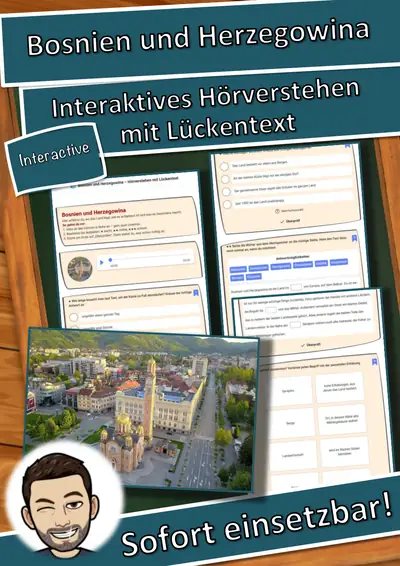
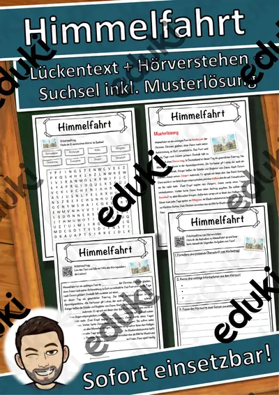
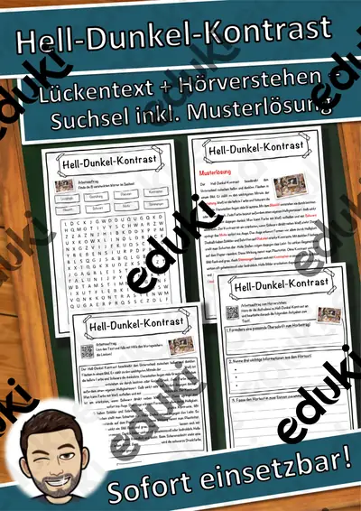

Bosnien und Herzegowina Lückentext mit Wortspeicher Hörverstehen und Suchsel
Bosnien und Herzegowina – Lückentext mit Wortspeicher & Suchsel | Sachtexte Geografie | Klasse 4–7 | mit Lösungen
Mit diesem abwechslungsreichen Arbeitsblatt lernen Ihre Schülerinnen und Schüler das Land Bosnien und Herzegowina auf motivierende Weise kennen. Der kindgerechte Sachtext vermittelt wichtige Informationen zur geografischen Lage auf dem Balkan, zur politischen Struktur mit drei Landesteilen und zur historischen Entwicklung nach der Unabhängigkeit. Anschließend sichern die Kinder ihr Wissen durch einen Lückentext mit Wortspeicher und ein passendes Suchsel.✔ Sachtext in einfacher Sprache✔ Lückentext mit Wortspeicher✔ Suchsel zur Wiederholung wichtiger Begriffe✔ Inklusive vollständiger Lösungen✔ Sofort einsetzbar ohne Vorbereitung✔ Ideal für Vertretungsstunden, Freiarbeit, Stationenlernen und Unterrichtseinheiten
Lehrplanbezug (Grundschule und Sekundarstufe I):Das Material fördert die Lesekompetenz, das sinnerfassende Lesen, die Entnahme von Informationen aus Sachtexten sowie geografisches und politisches Grundwissen. Es eignet sich besonders für die Bereiche Heimat- und Sachunterricht, Deutsch, Geographie, Geschichte sowie für fächerübergreifendes Lernen.
Enthalten sind:
- Sachtext mit Lückentext
- Suchsel
- Musterlösung zum Lückentext
- Musterlösung zum Suchsel
- PDF-Datei zum direkten Ausdrucken
Ideal für Lehrkräfte, die schnell ein motivierendes Material zu Bosnien und Herzegowina, zu Ländern des Balkans oder zur Förderung der Lesekompetenz durch Sachtexte suchen.
So setzen Sie das Material im Unterricht ein: Bewährt hat sich der Einstieg über das Hörverstehen – die Klasse scannt den QR-Code, hört den kindgerecht vertonten Sachtext zu „Bosnien und Herzegowina“ und tauscht erstes Vorwissen aus. In der Erarbeitungsphase lesen die Schülerinnen und Schüler den Sachtext in Ruhe und füllen den Lückentext aus; der Wortspeicher gibt dabei Sicherheit und entlastet das Arbeitsgedächtnis. Differenzierung leicht gemacht: Schnelle Lerner bearbeiten den Lückentext mit abgedecktem Wortspeicher, für DaZ/DaF-Lernende und den Förderunterricht dient er als gezielte Wortschatzstütze. Zur Festigung suchen die Kinder im Suchsel acht zentrale Begriffe des Themas – ideal auch als Puffer für schnelle Gruppen oder als Hausaufgabe. Die beiliegende Musterlösung ermöglicht Selbstkontrolle in der Freiarbeit, im Wochenplan und in Vertretungsstunden. Das Material ist ohne Vorbereitung einsetzbar: ausdrucken, austeilen, loslegen.
Passend zu den aktuellen Lehrplänen in Deutschland, Österreich und der Schweiz: Das Arbeitsblatt trainiert genau das, was die Bildungsstandards der Kultusministerkonferenz im Kompetenzbereich „Lesen – mit Texten und Medien umgehen“ fordern – sinnerfassendes Lesen, gezielte Informationsentnahme aus Sachtexten und die Sicherung des Fachwortschatzes. Damit lässt es sich in allen 16 Bundesländern und Schularten direkt einsetzen, etwa im Lernbereich „Lesen – mit Texten und weiteren Medien umgehen“ des bayerischen LehrplanPLUS, im Bereich „Texte und andere Medien“ des Bildungsplans Baden-Württemberg oder im Basiscurriculum Sprachbildung des Rahmenlehrplans Berlin-Brandenburg. Im österreichischen Lehrplan entspricht das dem Kompetenzbereich „Lesen – Umgang mit Texten und Medien“ in Volksschule, Mittelschule und AHS-Unterstufe, im Schweizer Lehrplan 21 dem Fachbereich Deutsch D.2 „Lesen“ mit dem Schwerpunkt „Verstehen von Sachtexten“ (Zyklus 2 und 3). Wortspeicher und Lückentext stützen zudem den systematischen Wortschatzaufbau in Deutsch als Zweitsprache (DaZ/DaF).Mit seinem Thema „Bosnien und Herzegowina“ gehört das Blatt zudem in den Erdkunde/Geographie-Unterricht – hier greifen im Heimat- und Sachunterricht der Lernbereich „Raum und Mobilität“, in Österreich „Geographie und wirtschaftliche Bildung“, im Lehrplan 21 die Kompetenz „Menschen nutzen Räume“ (NMG.8) bzw. „Räume, Zeiten, Gesellschaften“ (RZG) – und es bietet direkte Anknüpfungspunkte im Fach Geschichte: im Heimat- und Sachunterricht der Lernbereich „Zeit und Wandel“, in Österreich der Erfahrungs- und Lernbereich „Zeit“, im Lehrplan 21 die Kompetenz „Zeit, Dauer und Wandel verstehen“ (NMG.9) bzw. der Fachbereich „Räume, Zeiten, Gesellschaften“ (RZG).
Ähnliche Materialien

Bosnien und Herzegowina – Hörverstehen mit Lückentext (interaktiv)

Balkan Lückentext mit Wortspeicher Hörverstehen und Suchsel

Unabhängigkeit Lückentext mit Wortspeicher Hörverstehen und Suchsel

Josef und seine Brüder Lückentext mit Wortspeicher Hörverstehen und Suchsel

Hoffnung auf Vollendung Lückentext mit Wortspeicher Hörverstehen und Suchsel

Himmelfahrt Lückentext mit Wortspeicher Hörverstehen und Suchsel

Hell-Dunkel-Kontrast Lückentext mit Wortspeicher Hörverstehen und Suchsel